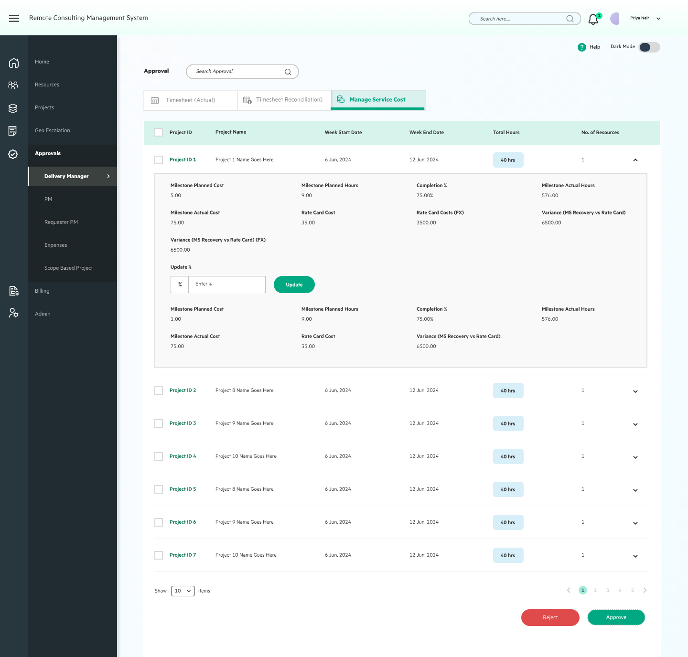
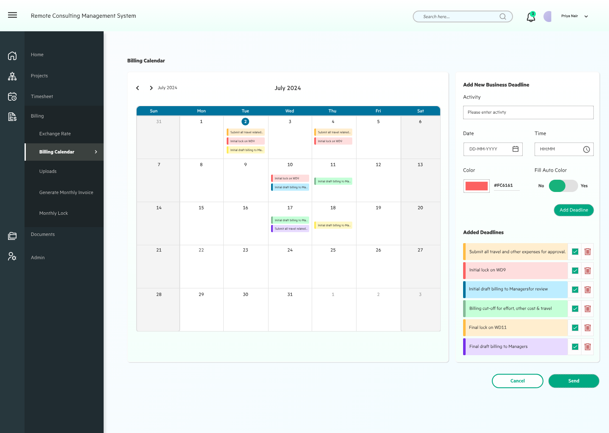

HPE / NCG Client · Enterprise Operations · Redesign of a Live System · 02/11
RCMSOne System. Two Engagement Models.
- Role
- Lead UX Designer, the only designer on the team
- Context
- Redesign of HPE's live delivery operations tool, from v2 to v3 · NCG client engagement
- Platform
- Web · Light and dark mode · 8 modules
- Scale
- Built for a delivery organization of more than 2,000 employees
A LIVE SYSTEM. TWO DIFFERENT CONTRACTS.
RCMS (Remote Consulting Management System) is the tool HPE's delivery organization uses to run its consulting work: timesheets, projects, approvals, expenses and billing.
HPE delivers that work under two commercial models. Staff Augmentation is billed by time and rate. Outcome-based work is billed against scope and milestones. Same organization, same roles, but different financial logic, different approval responsibilities and different billing triggers.
RCMS was already in use when NCG took on the upgrade. HPE asked for a full UX and UI redesign of the existing modules, on HPE's own design system and brand rules, with the backend staying as it was. I led the redesign as the only designer on the team, from the first explorations to reviewing the built pages against the designs.
The Brief
Upgrade RCMS with a new user experience and interface, across the modules it already has.
The brief was about the interface. The problem underneath it was structural.
SAME ROLE. DIFFERENT QUESTION.
The two engagement models answer different questions at the same step of the work.
A Delivery Manager approving an Outcome-based project's cost is asking: did we deliver the scope against the budget? The same Delivery Manager approving a Staff Augmentation timesheet is asking: did this person log accurate hours against the plan? Same role, same approval module, different decision.
BUILD ONE LAYOUT FOR BOTH MODELS, AND EVERY APPROVER HAS TO REBUILD THE CONTEXT BEFORE EVERY DECISION.
There was a second constraint. This was a live system, and people already knew how it worked. Every change had a cost for the people using it. So the question for each screen was what to keep, not only what to change.
FOUR DECISIONS THAT SHAPED THE SYSTEM.
Decision 01
Keep the Calendar, Make It Do More
v2 already logged time on a month calendar, and people knew it.
Early on, I explored a different approach: one card per project, with that week's hours inside each card. I wanted to see whether it would work better. When I tested it with users, the response wasn't good and it raised an adoption issue, so I dropped it.
So I kept the calendar and gave it more to do. In v2, it was a place to type hours. In v3, it became the place to plan, log and track them.

Project and work-code panel
Projects are grouped by engagement model, with planned and actual hours for each. The work code you select drives the calendar.
Planned and actual on each day
A gap shows up on the day it happens, not at submission.
Approval status on every day
The calendar also shows what was approved, what is in progress and what was rejected.
Decision 02
Context Before Data
HPE had the approval hierarchy: Delivery Manager, PMO and Requester PM. What I redesigned was how each approver meets the data.
Staff Augmentation and Outcome-based work open different approval views for the same role. Before showing any numbers, the screen tells the approver which model and which type of approval they are in. Then the layout answers the question that model asks: hours against the plan, or cost against the scope.

The model in the tabs
Timesheet Actual, Timesheet Reconciliation and Manage Service Cost. You know where you are before you see a number.
Planned against reconciled hours
The difference for each person is readable in one scan.
One decision at the end
Reject and Approve sit after the data, not before it.

Cost against scope
Milestones, completion and variance, the question this model asks.
Collapsed rows
All projects at a glance; open only the one that needs action.
Same place, different question
The same role and module as Staff Augmentation, with a layout for this model.
Decision 03
One Financial Chain
The rate card model was HPE's. The problem was distance. A rate card error doesn't show up where the rate card is set. It shows up later, in billing, when the cause is hard to find.
I designed how the Admin, Projects and Billing modules connect, so a rate card can be traced from where it is assigned to the line it bills. A finance or PMO user doesn't have to hold that chain in their head.

The billing cycle as a calendar
The same pattern as the timesheet, so the month's deadlines read at a glance.
Deadlines set where they are read
Finance admins manage the deadlines in the same calendar view.
Decision 04
Dark Mode Parity
Dark mode wasn't an HPE requirement. It was my call. Delivery Managers and PMO users spend long hours in this tool, often across time zones.
Parity meant designing every timesheet, approval and profile screen for both themes from the start. That made the hierarchy better: when a component has to work on both backgrounds, the structure has to come from the layout, not the color.

WHAT CHANGED, AND WHAT DIDN'T.
- A home page. v2 had none. v3 opens on recent project updates and quick links.
- Projects at a glance. The project list has status cards and filters.
- Shorter forms. Adding a project went from one long form to two tabbed steps.
- Nothing hidden. Information v2 kept in collapsed sections is laid out in the open, and project chat has its own tab.
- Phases as checklists. Each phase of HPE's delivery framework has its own checklist, so a project shows what is done and what is still needed.
What stayed: the calendar, the module structure and the approval hierarchy HPE already had.
WHAT WAS DELIVERED.
2,000+
Employees in the delivery organization the tool was built for.
8
Modules redesigned: Timesheet and Expenses, Approvals, Billing, Admin, Projects, Resources, Escalations, User Profile.
2
Engagement models in one system, not two parallel products.
1
Designer, from the first explorations to design review of the built pages.
RCMS is still live, and people at HPE still use it internally. This page reports scope, not measured results.
STRUCTURE THAT HOLDS.
The hardest problem in RCMS wasn't any one module. It was keeping one system coherent with two models at its core, inside a tool people already knew.
Two lessons stayed with me. When a system really splits in two, make the split clear at the moment it matters and quiet everywhere else. And in a redesign of a live system, what you keep is a design decision too. The calendar stayed because people knew it. What changed was what it could tell them.
A SYSTEM DOESN'T FAIL WHERE IT ACTS. IT FAILS WHERE IT ASSUMES THE USER ALREADY KNOWS WHICH CONTEXT THEY'RE IN.